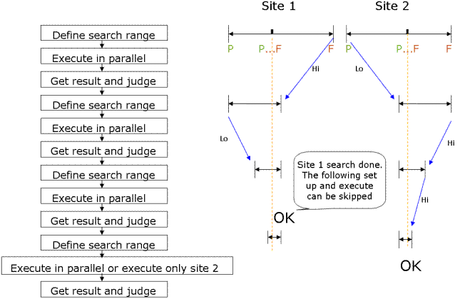

Usage of Parallel Hardware (PPMU)
This topic focuses on rules and examples for programming test methods for multisite hardware.
Enhancing multisite performance
Rules
- Site dependent variables:
- Define global or static arrays or variables.
- Assign variable values before the ON_FIRST_INVOCATION
block.
You may refer to them in the
ON_FIRST_INVOCATIONblock.
- For parallel execution, place the setup and execute steps that involve hardware inside the
ON_FIRST_INVOCATIONblock.For more details, see below paragraph Test method API ON_FIRST_INVOCATION_BEGIN.
CAUTION Never use theTEST()API inside an ON_FIRST_INVOCATION block. This will lead to incorrect binning of sites in a multisite program.TEST()API only works for the first site invocated while other sites will not invocateTEST, thus making those sites a fake pass result! - Execution depending on a previous result:
Place the APIs
Get ResultandCalculateinside a FOR_EACH_SITE_BEGIN or FOR_EACH_SITE_BEGIN_WITH_QUERY block. - Exclude the following APIs from parallel execution (SmarTest executes them on the system controller):
ResultCalculateJudge
- Enable all parallel flags, otherwise, everything will be running serially:
- On the Flag tab of the Flow Data Editor set parallel_mode = on
- Site Control:
- On the SmarTest menu click
- On the menu of the Site Control window click
- For all test suite, set allow parallel =
yesNote If executed in the first invocation block, the following APIs perform for the first tested site only:
- Analog.AWG(pin).get_function()
- Analog.DGT(pin).get_function()
- Analog.TIA(pin).get_function()
- Analog.PPS(pin).get_function()
- ANALOG(set).AWG(pin).get_function()
- ANALOG(set).DGT(pin).get_function()
- ANALOG(set).TIA(pin).get_function()
- Routing.get_function()
- Primary.get_function()
- Primary.XXXXX().get_function()
- DPS_VFIM(pin).get_function()
- PMU_IFVM(pin).get_function()
- PMU_VFIM(pin).get_function()
- GET_FUNCTIONAL_RESULT()
- IS_TEST_RUNNING()
- CURRENT_SITE_NUMBER()
- TEST()
- PUT_DATALOG()Note FlexDC APIs support different settings on different sites.
Test method API ON_FIRST_INVOCATION
To implement this test method API:
- Clearly separate Measurement or Test Preparation, Setup and Execution phases from the result retrieval and data logging phases.
- Do the complete Test Preparation, Setup, Execution for all sites during the first call of the TM code (originally intended to handle site #1 only).
Avoid:
- Querying results in the "ON_FIRST_INVOCATION" blocks, since this breaks the concept and serializes the execution
- Using multiple blocks in a test. Where possible, consolidate the blocks first.
- Putting CONNECT/DISCONNECT outside the blocks.
Important points
- ON_FIRST_INVOCATION_BEGIN and ON_FIRST_INVOCATION_END should be used as a pair. The area enclosed by this pair is called first-invocation block.
- This API is meaningful for multi-site testing. For single-site testing, this API is ignored.
- You can describe the Setup and Execute APIs within the first-invocation block, in order to achieve them for all active sites in parallel. In addition to the Setup and Execute APIs, you can describe any other function. However, these functions work for the currently-tested site (for example, Result APIs), or regardless of site information (for example, Computation APIs).
- All statements in the first-invocation block are executed once only when the program is run for the first tested site.
You can describe the FW_TASK API enclosed by the BEGIN_EXTENSION API with the site parameter and END_EXTENSION API in the first-invocation block for multi-site testing. Note that you should not describe it enclosed by the BEGIN_EXTENSION API with no parameter and END_EXTENSION API.
Examples
Parallel multisite test method
INT n_of_Vdtz, timeout_flag;
ARRAY_D dVdtz;
THDtype thdResult;
ON_FIRST_INVOCATION_BEGIN();
//
// Parallel Setup and Execution APIs [begin]
//
Routing.pin("aout").connect(TM::SINGLE);
DGT("aout").enable();
EXECUTE_TEST(1.0 sec, &tout_flag, &mis_trig);
if (mis_trig != 0)
{
cout << "Missed Trigger Occurs.\n";
}
DGT("aout").abort(); //Aborts and disables trig.
Routing.pin("aout").disconnect(); //on next flush
//
// Parallel Setup and Execution APIs [end]
//
ON_FIRST_INVOCATION_END();
//
// Serial Analysis APIs [begin]
//
dVdtz=DGT("aout").getWaveform();
n_of_Vdtz=dVdtz.size();
DSP_THD(dVdtz, result, n_of_dVdtz, 1, 3, DB, 0);
TEST("aout", "THD_test", thdResult.thd, TRUE);
//
// Serial Analysis APIs [end]
//Site specific settings
//
// Execute measurement once in parallel for all sites:
//
ON_FIRST_INVOCATION_BEGIN();
setting.pin("pin1, pin2").iRange(100 uA);
setting.pin("pin1").iForce(10 uA).min(50 mV).max(100 mV);
setting.pin("pin2").vForce(1 mV).min(10 uA).max(20 uA);
meas.pin ( "pin1,pin2" ).execMode( TM::PVAL );
//
// Download setting to HW, use the setup() method:
// -> Fix MSET!
// -> Do this before site-specific settings
//
tasks.add( setting ).add( meas ).setup();Note Important: When using different force values by devices or sites, you must use the
SETUP command. If do not use it SmarTest will run out of MSETs as if will
assign a new MSET for each new
value).
FOR_EACH_SITE_BEGIN();
DOUBLE refV;
//
// Getting a site specific measurement result from a former test suite:
//
GET_USER_DOUBLE("refV", &refV);
//
// Setting the site specific measurement result as a force value:
//
setting.pin("pin2").vForce(refV + 0.5 V);
FOR_EACH_SITE_END();
tasks.execute();
ON_FIRST_INVOCATION_END();
//
// Execute value return and logging site by site:
//
DOUBLE val1 = meas.getValue( "pin1" );
DOUBLE val2 = meas.getValue( "pin2" );
TEST( "pin1" , "testname", val1);
TEST( "pin2" , "testname", val2);Define different search conditions for different sites
//
// Define SEARCH_FUNC_TASK instance:
//
SEARCH_FUNC_TASK task;
//
// Define site specific start and stop values:
//
DOUBLE site_start[2] = {20,40};
DOUBLE site_stop[2] = {80,90};
ON_FIRST_INVOCATION_BEGIN();
FOR_EACH_SITE_BEGIN();
//
// Get site specific values by referring to array elements
//with the CURRENT_SITE_NUMBER() API:
//
task.pin("p1,p2") .spec("DEL",TM::TIM)
.method(TM::Binary) .start(site_start[CURRENT_SITE_NUMBER()-1])
.stop(site_stop[CURRENT_SITE_NUMBER()-1]).resolution(1);
FOR_EACH_SITE_END();
Task.execute();
ON_FIRST_INVOCATION_END();
Boolean pass_fail = task.getPassFail("p1,p2");
If (pass_fail == TRUE)
{
TEST("p1,p2", "", TM:Pass, TM::CONTINUE);
}
else
{
TEST("p1,p2", "", TM::Fail, TM::CONTINUE);
}Binary search of DC TEST

INT loop_count = 0;
static ARRAY_D vcout(4);
ARRAY_D hi_lim(4),lo_lim(4);
hi_lim.init(3.0);
lo_lim.init(2.0);
PPMU_SETTING ppmuSet;
PPMU_RELAY ppmuRelayOn,ppmuRelayOff;
PPMU_MEASURE ppmuMeas;
TASK_LIST ppmuTask;
ON_FIRST_INVOCATION_BEGIN();
AWG("AWG").trigger();
WAIT_TIME(10 ms);
ppmuSet.pin("TEST").vForce(2 V).iRange(10 mA).min(-10 mA).max(10 mA);
ppmuSet.pin("MEAS").iForce(0 uA).iRange(100 uA).min(-1 uA).max(1 uA);
ppmuRelayOn.pin("TEST,MEAS").status("PPMU_ON");
ppmuRelayOn.wait(3 ms);
ppmuMeas.pin("MEAS").execMode(TM::PAVL);
ppmuTask.add(ppmuSet).add(ppmuRelayOn).add(ppmuMeas).setup();
STRING sites_active;
GET_ACTIVE_SITES(sites_active);
do
{
//
// Serial per site setup [begin]
//
loop_count++;
FOR_EACH_SITE_BEGIN();
ppmuSet.pin("TEST").vForce((hi_lim[SITE_NR]+lo_lim[SITE_NR])/2).iRange(10 mA).min(-10 mA).max(10 mA);
FOR_EACH_SITE_END();
//
// Serial per site setup [end]
// Parallel execution
ppmuTask.execute();
FOR_EACH_SITE_BEGIN();
//
// Get per site result and change search range serially [begin]
//
Vcout[SITE_NR]= ppmuMeas.getValue("MEAS");
If(Vcout[SITE_NR]>2.1) && (sites_active[SITE_NR]=='1'))
{
//
// Change high limit:
//
hi_lim[SITE_NR]= (hi_lim[SITE_NR]+lo_lim[SITE_NR])/2;
}
else
{
if(Vcout[SITE_NR]<1.9 &&(sites_active[SITE_NR]=='1'))
{
//
// Change low limit
//
lo_lim[SITE_NR]=(hi_lim[SITE_NR]+lo_lim[SITE_NR])/2;
}
else
{
//
// We got it.
//
sites_active[SITE_NR]='0';
}
}
//
// Get per site result and change search range serially [end]
//
FOR_EACH_SITE_END();
}
while(loop_count< 100 && sites_active !="0000");
ABORT_TEST();
ON_FIRST_INVOCATION_END();Test method programming for multisite complex caching
INT n_of_Vdtz, timeout_flag;
ARRAY_D wfm_1, wfm_2;
THDtype thdResult;
//
// Block A [begin]
//
ON_FIRST_INOVOCATION_BEGIN();
Routing.pin("aout").connect(TM::SINGLE);
DGT("aout").enable();
EXECUTE_TEST(1.0 sec, &timeout_flag); // Sequencer run
ON_FIRST_INOVOCATION_END();
//
// Block A [end]
//
//
// Block B [begin]
//
wfm_1=DGT("aout").getWaveform(); //Upload
//
// Block B [end]
//
//
// Block C [begin]
//
ON_FIRST_INOVOCATION_BEGIN();
Primary.label("new_setup");
EXECUTE_TEST(1.0 sec, &timeout_flag);
DGT("aout").disable();
FLUSH();
ON_FIRST_INOVOCATION_END();
//
// Block C [end]
//
//
// Block D [begin]
//
wfm_2=DGT("aout").getWaveform();
//
// Block D [end]
//
n_of_Vdtz=dVdtz.size();
DSP_THD(dVdtz, result, n_of_dVdtz, 1, 3, DB, 0);
TEST("aout", "THD_test", thdResult.thd, TRUE);Functional changes
- Introduced in SmarTest 6.5.4